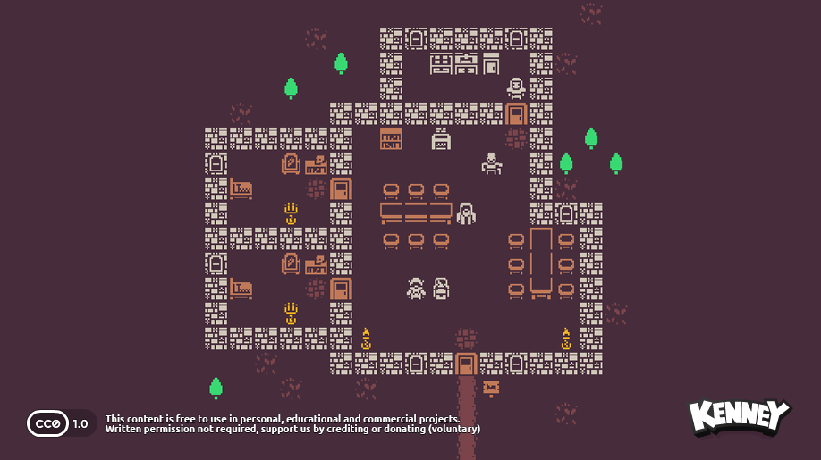
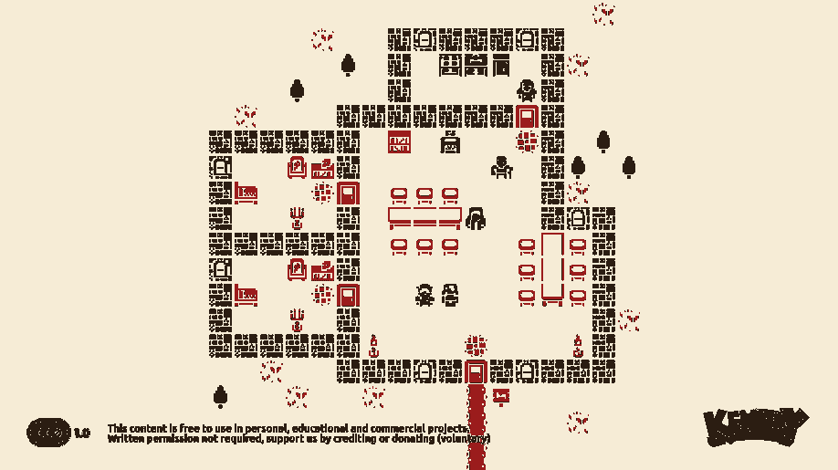
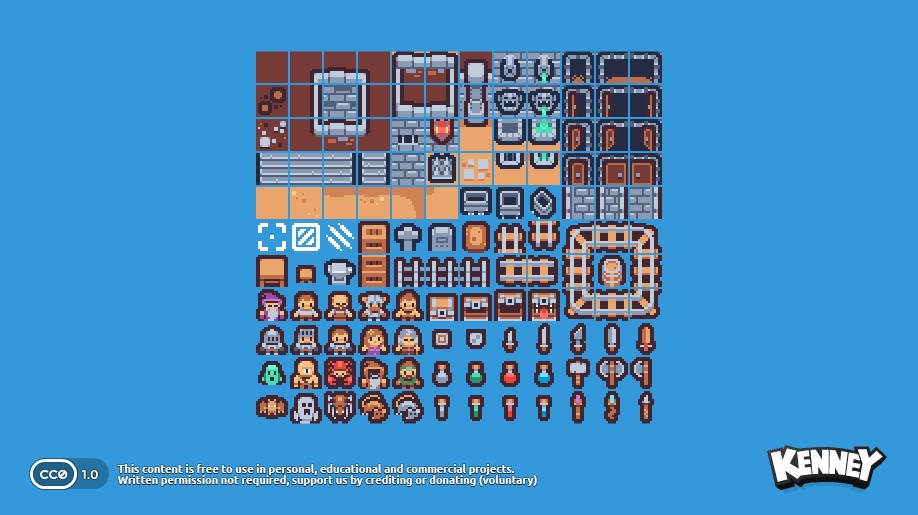
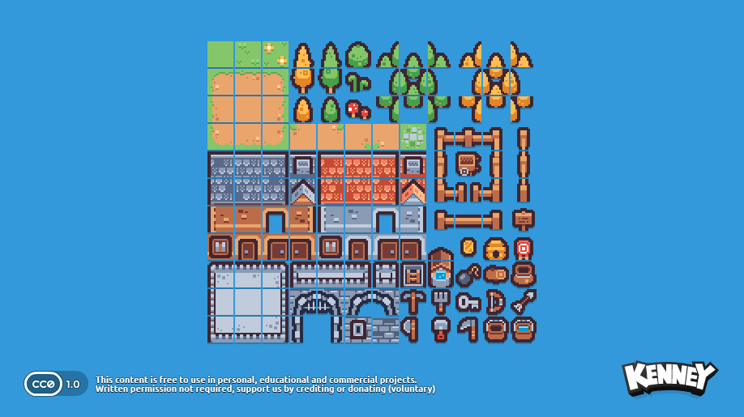
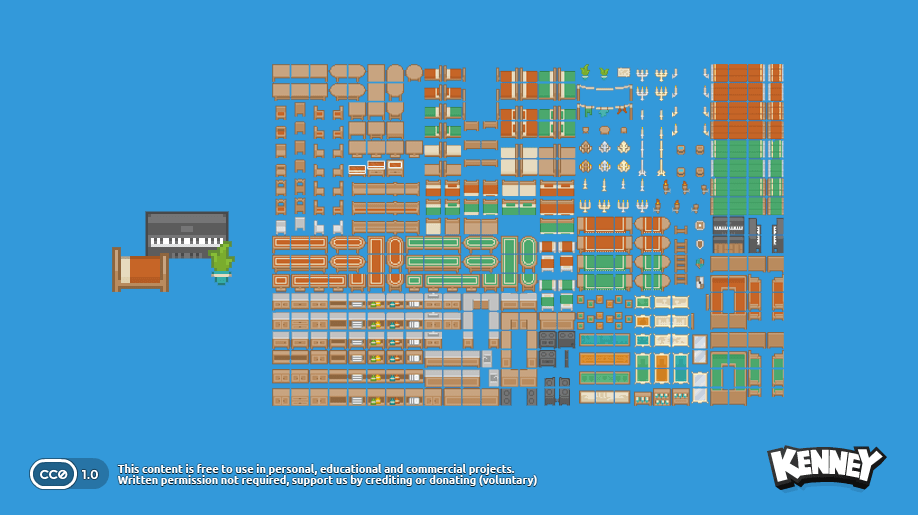
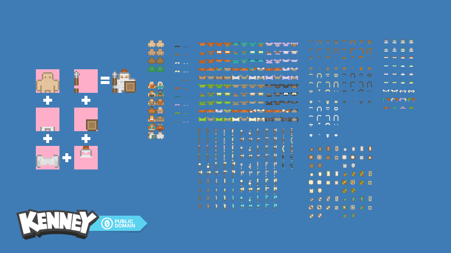
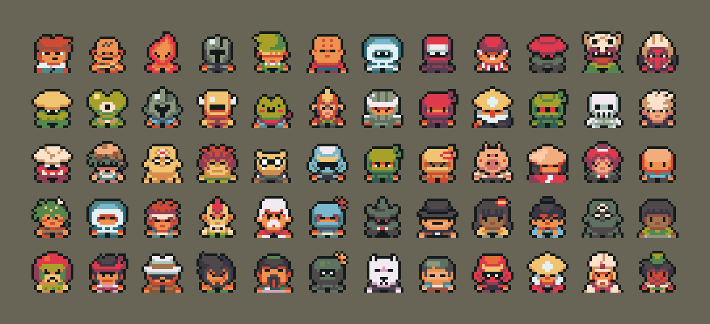
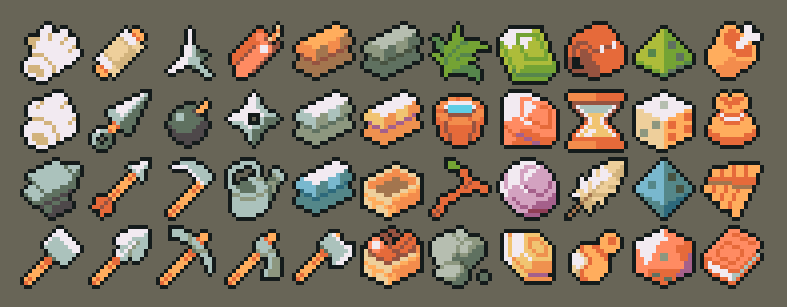

Episode N · Slice 6 decision
Pixel-art pack shortlist
Four packs passed the hard requirement: CC0 (no attribution or share-alike), checked on each official page. None covers the tavern perfectly on its own. Everything marked maybe was judged from preview images, without opening the archives.
My pick for the Codex look
Kenney · 1-Bit Pack
CC016×16 (stated)1,078 tilesno animation


| Walls, doors, stairs | yes |
| Tables, chairs, counters | yes (long tables work as a bar) |
| Shelves | maybe (bookcases and shelves) |
| Barrels, chest, hearth, trapdoor | maybe: not visible in the previews |
| Rug, wooden floor | pattern floors only |
| Characters | dozens of humanoids, including hooded ones |
| Item icons | large set: keys, potions, bows, scrolls |
| Animation | none |
Why I'd pick it: it's the only pack whose style fits the book. Tinted brown ink with
red-ink selection, the map reads as an illustration drawn on the left page rather than a video game pasted into a book.
It's one cohesive style for tiles, characters and icons, with by far the most pieces. Cost: no animation,
less colour to tell characters apart (we'd use name labels and ink tints per role), and a few props may need a hand-drawn tile.
Most cohesive in colour
Kenney · Tiny Dungeon + Tiny Town
CC016×16 (stated)~260 tilesno animation


| Stone walls, doors, stairs | yes |
| Barrels, chests | yes |
| Tables, stools | simple |
| Bar counter, bottle shelves | no |
| Hearth, rug, wooden floor | no (sand and stone floors) |
| Characters | ~16 humanoids (wizard, knights, rogue, dwarf, hooded…) |
| Item icons | potions, weapons, key, bow (no quill, letter or rope) |
| Animation | none |
A charming, readable, cohesive medieval style. But it's a dungeon and town set: the tavern's
signature pieces (bar, shelves, hearth, rug) are missing, so we'd draw several tiles ourselves.
Most furniture
Kenney · Roguelike Indoors + Roguelike Characters
CC0tile size unverified (likely 16×16)~930 filesno animation


| Wood floor, tables, chairs, rug, doors | yes |
| Counters, shelves | yes |
| Stone walls, barrels, chest, stairs | maybe |
| Hearth | only a stove is visible |
| Characters | dozens via layering (no halfling body) |
| Animation | none; one facing; layers must be composited |
The best tavern furniture coverage, but the style leans modern and domestic (pianos, sofas, bright
colours). Characters have to be assembled from layers. Workable, but the least "fantasy".
Best characters
Pixel-Boy & AAA · Ninja Adventure
CC016×16 (page tag)50+ charactersanimated


| Characters | 50+, animated, with portraits: enough for all 9 roles |
| Item icons | 60+ (feather and scroll-like ones) |
| Tavern furniture | "a bit limited at the moment", says the author |
| Interior screenshots | none in the gallery |
Easily the most alive characters, and the portraits would look great on party cards and journal lines.
But the tavern would have to come from another pack, which means mixing styles. The usual pairing is Ninja Adventure
characters with Roguelike Indoors furniture, and the outlines and palettes don't match.
Considered but excluded
- 0x72 DungeonTileset II: CC0 and animated heroes, but dungeon-only (no tavern furniture).
- Tangerine Tavern: a direct 16×16 tavern fit, but CC BY-SA 4.0 and partly paid.
- AxulArt Basic Top-down Interior: CC BY 4.0 (and the page contradicts itself on the licence).
- Versatile 255-Tile Pack: CC0, but only ~4 humanoids and few tavern props.
- LPC Tavern, Interior Tileset 16×16: licences couldn't be verified (OpenGameArt was down). Snippets say CC-BY-SA, and LPC is 32×32.
- Fantasy Interiors: paid.